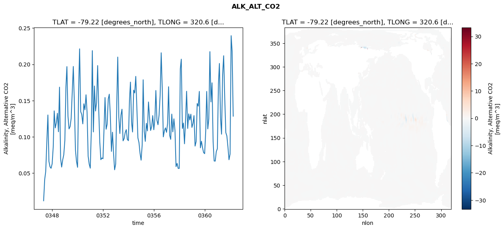
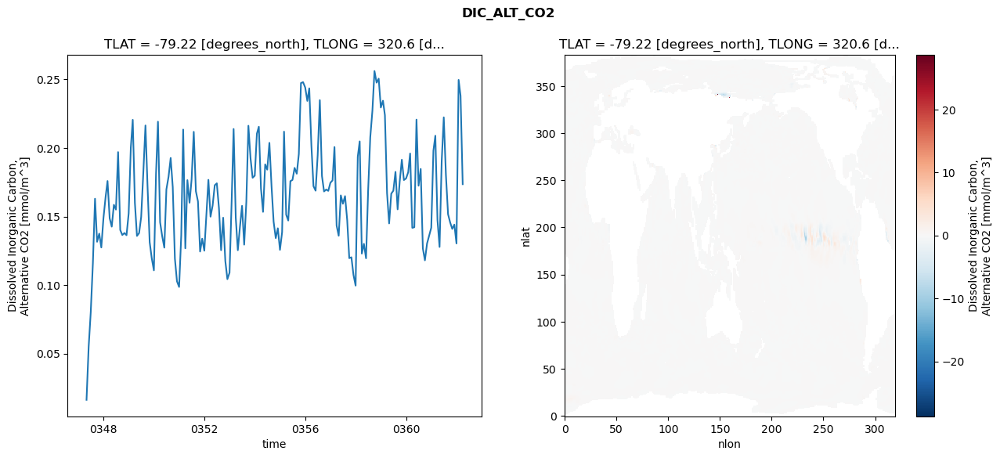
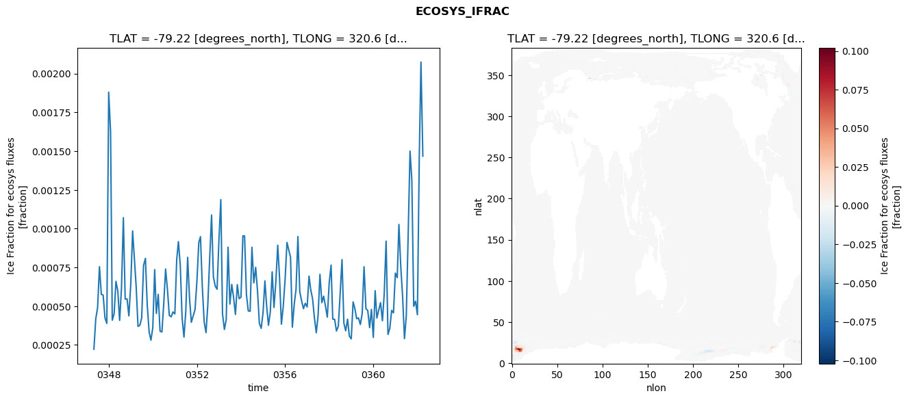
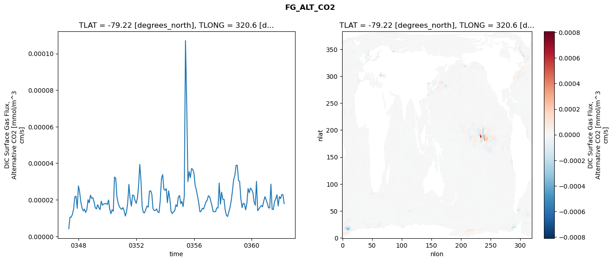

glb-dor_North_Atlantic_basin_024_1999-04-01_00097#
Simulation details#
Case: smyle.cdr-atlas-v0.glb-dor_North_Atlantic_basin_024_1999-04-01_00097.001
Basin: North_Atlantic_basin
Polygon: 24.0
Start date: 1999-04
Show code cell source Hide code cell source
import xarray as xr
import matplotlib.pyplot as plt
Show code cell source Hide code cell source
zarr_store = "/path/to/zarr/store"
# Parameters
zarr_store = "/global/cfs/projectdirs/m4746/Projects/Ocean-CDR-Atlas-v0/data/validation/smyle.cdr-atlas-v0.glb-dor_North_Atlantic_basin_024_1999-04-01_00097.001.validation.zarr"
Show code cell source Hide code cell source
%%time
ds_o = xr.open_zarr(zarr_store).compute()
ds_o
CPU times: user 649 ms, sys: 494 ms, total: 1.14 s
Wall time: 1.32 s
<xarray.Dataset> Size: 2MB
Dimensions: (nlat: 384, nlon: 320, time: 180)
Coordinates:
TLAT float64 8B -79.22
TLONG float64 8B 320.6
ULAT float64 8B -78.95
ULONG float64 8B 321.1
* time (time) object 1kB 0347-05-01 00:00:00 ... 0362-04-01 0...
z_t float32 4B 500.0
Dimensions without coordinates: nlat, nlon
Data variables:
ALK_ALT_CO2_diff (nlat, nlon) float32 492kB nan nan nan ... nan nan nan
ALK_ALT_CO2_rmse (time) float64 1kB 0.01166 0.04104 ... 0.2176 0.1284
DIC_ALT_CO2_diff (nlat, nlon) float32 492kB nan nan nan ... nan nan nan
DIC_ALT_CO2_rmse (time) float64 1kB 0.0163 0.05513 ... 0.238 0.1736
ECOSYS_IFRAC_diff (nlat, nlon) float32 492kB nan nan nan ... nan nan nan
ECOSYS_IFRAC_rmse (time) float64 1kB 0.0002223 0.0004188 ... 0.001468
FG_ALT_CO2_diff (nlat, nlon) float32 492kB nan nan nan ... nan nan nan
FG_ALT_CO2_rmse (time) float64 1kB 4.177e-06 1.051e-05 ... 1.788e-05xarray.Dataset
- nlat: 384
- nlon: 320
- time: 180
- TLAT()float64-79.22
- long_name :
- array of t-grid latitudes
- units :
- degrees_north
array(-79.22052261)
- TLONG()float64320.6
- long_name :
- array of t-grid longitudes
- units :
- degrees_east
array(320.56250892)
- ULAT()float64-78.95
- long_name :
- array of u-grid latitudes
- units :
- degrees_north
array(-78.95289509)
- ULONG()float64321.1
- long_name :
- array of u-grid longitudes
- units :
- degrees_east
array(321.12500894)
- time(time)object0347-05-01 00:00:00 ... 0362-04-...
- bounds :
- time_bound
- long_name :
- time
array([cftime.DatetimeNoLeap(347, 5, 1, 0, 0, 0, 0, has_year_zero=True), cftime.DatetimeNoLeap(347, 6, 1, 0, 0, 0, 0, has_year_zero=True), cftime.DatetimeNoLeap(347, 7, 1, 0, 0, 0, 0, has_year_zero=True), cftime.DatetimeNoLeap(347, 8, 1, 0, 0, 0, 0, has_year_zero=True), cftime.DatetimeNoLeap(347, 9, 1, 0, 0, 0, 0, has_year_zero=True), cftime.DatetimeNoLeap(347, 10, 1, 0, 0, 0, 0, has_year_zero=True), cftime.DatetimeNoLeap(347, 11, 1, 0, 0, 0, 0, has_year_zero=True), cftime.DatetimeNoLeap(347, 12, 1, 0, 0, 0, 0, has_year_zero=True), cftime.DatetimeNoLeap(348, 1, 1, 0, 0, 0, 0, has_year_zero=True), cftime.DatetimeNoLeap(348, 2, 1, 0, 0, 0, 0, has_year_zero=True), cftime.DatetimeNoLeap(348, 3, 1, 0, 0, 0, 0, has_year_zero=True), cftime.DatetimeNoLeap(348, 4, 1, 0, 0, 0, 0, has_year_zero=True), cftime.DatetimeNoLeap(348, 5, 1, 0, 0, 0, 0, has_year_zero=True), cftime.DatetimeNoLeap(348, 6, 1, 0, 0, 0, 0, has_year_zero=True), cftime.DatetimeNoLeap(348, 7, 1, 0, 0, 0, 0, has_year_zero=True), cftime.DatetimeNoLeap(348, 8, 1, 0, 0, 0, 0, has_year_zero=True), cftime.DatetimeNoLeap(348, 9, 1, 0, 0, 0, 0, has_year_zero=True), cftime.DatetimeNoLeap(348, 10, 1, 0, 0, 0, 0, has_year_zero=True), cftime.DatetimeNoLeap(348, 11, 1, 0, 0, 0, 0, has_year_zero=True), cftime.DatetimeNoLeap(348, 12, 1, 0, 0, 0, 0, has_year_zero=True), cftime.DatetimeNoLeap(349, 1, 1, 0, 0, 0, 0, has_year_zero=True), cftime.DatetimeNoLeap(349, 2, 1, 0, 0, 0, 0, has_year_zero=True), cftime.DatetimeNoLeap(349, 3, 1, 0, 0, 0, 0, has_year_zero=True), cftime.DatetimeNoLeap(349, 4, 1, 0, 0, 0, 0, has_year_zero=True), cftime.DatetimeNoLeap(349, 5, 1, 0, 0, 0, 0, has_year_zero=True), cftime.DatetimeNoLeap(349, 6, 1, 0, 0, 0, 0, has_year_zero=True), cftime.DatetimeNoLeap(349, 7, 1, 0, 0, 0, 0, has_year_zero=True), cftime.DatetimeNoLeap(349, 8, 1, 0, 0, 0, 0, has_year_zero=True), cftime.DatetimeNoLeap(349, 9, 1, 0, 0, 0, 0, has_year_zero=True), cftime.DatetimeNoLeap(349, 10, 1, 0, 0, 0, 0, has_year_zero=True), cftime.DatetimeNoLeap(349, 11, 1, 0, 0, 0, 0, has_year_zero=True), cftime.DatetimeNoLeap(349, 12, 1, 0, 0, 0, 0, has_year_zero=True), cftime.DatetimeNoLeap(350, 1, 1, 0, 0, 0, 0, has_year_zero=True), cftime.DatetimeNoLeap(350, 2, 1, 0, 0, 0, 0, has_year_zero=True), cftime.DatetimeNoLeap(350, 3, 1, 0, 0, 0, 0, has_year_zero=True), cftime.DatetimeNoLeap(350, 4, 1, 0, 0, 0, 0, has_year_zero=True), cftime.DatetimeNoLeap(350, 5, 1, 0, 0, 0, 0, has_year_zero=True), cftime.DatetimeNoLeap(350, 6, 1, 0, 0, 0, 0, has_year_zero=True), cftime.DatetimeNoLeap(350, 7, 1, 0, 0, 0, 0, has_year_zero=True), cftime.DatetimeNoLeap(350, 8, 1, 0, 0, 0, 0, has_year_zero=True), cftime.DatetimeNoLeap(350, 9, 1, 0, 0, 0, 0, has_year_zero=True), cftime.DatetimeNoLeap(350, 10, 1, 0, 0, 0, 0, has_year_zero=True), cftime.DatetimeNoLeap(350, 11, 1, 0, 0, 0, 0, has_year_zero=True), cftime.DatetimeNoLeap(350, 12, 1, 0, 0, 0, 0, has_year_zero=True), cftime.DatetimeNoLeap(351, 1, 1, 0, 0, 0, 0, has_year_zero=True), cftime.DatetimeNoLeap(351, 2, 1, 0, 0, 0, 0, has_year_zero=True), cftime.DatetimeNoLeap(351, 3, 1, 0, 0, 0, 0, has_year_zero=True), cftime.DatetimeNoLeap(351, 4, 1, 0, 0, 0, 0, has_year_zero=True), cftime.DatetimeNoLeap(351, 5, 1, 0, 0, 0, 0, has_year_zero=True), cftime.DatetimeNoLeap(351, 6, 1, 0, 0, 0, 0, has_year_zero=True), cftime.DatetimeNoLeap(351, 7, 1, 0, 0, 0, 0, has_year_zero=True), cftime.DatetimeNoLeap(351, 8, 1, 0, 0, 0, 0, has_year_zero=True), cftime.DatetimeNoLeap(351, 9, 1, 0, 0, 0, 0, has_year_zero=True), cftime.DatetimeNoLeap(351, 10, 1, 0, 0, 0, 0, has_year_zero=True), cftime.DatetimeNoLeap(351, 11, 1, 0, 0, 0, 0, has_year_zero=True), cftime.DatetimeNoLeap(351, 12, 1, 0, 0, 0, 0, has_year_zero=True), cftime.DatetimeNoLeap(352, 1, 1, 0, 0, 0, 0, has_year_zero=True), cftime.DatetimeNoLeap(352, 2, 1, 0, 0, 0, 0, has_year_zero=True), cftime.DatetimeNoLeap(352, 3, 1, 0, 0, 0, 0, has_year_zero=True), cftime.DatetimeNoLeap(352, 4, 1, 0, 0, 0, 0, has_year_zero=True), cftime.DatetimeNoLeap(352, 5, 1, 0, 0, 0, 0, has_year_zero=True), cftime.DatetimeNoLeap(352, 6, 1, 0, 0, 0, 0, has_year_zero=True), cftime.DatetimeNoLeap(352, 7, 1, 0, 0, 0, 0, has_year_zero=True), cftime.DatetimeNoLeap(352, 8, 1, 0, 0, 0, 0, has_year_zero=True), cftime.DatetimeNoLeap(352, 9, 1, 0, 0, 0, 0, has_year_zero=True), cftime.DatetimeNoLeap(352, 10, 1, 0, 0, 0, 0, has_year_zero=True), cftime.DatetimeNoLeap(352, 11, 1, 0, 0, 0, 0, has_year_zero=True), cftime.DatetimeNoLeap(352, 12, 1, 0, 0, 0, 0, has_year_zero=True), cftime.DatetimeNoLeap(353, 1, 1, 0, 0, 0, 0, has_year_zero=True), cftime.DatetimeNoLeap(353, 2, 1, 0, 0, 0, 0, has_year_zero=True), cftime.DatetimeNoLeap(353, 3, 1, 0, 0, 0, 0, has_year_zero=True), cftime.DatetimeNoLeap(353, 4, 1, 0, 0, 0, 0, has_year_zero=True), cftime.DatetimeNoLeap(353, 5, 1, 0, 0, 0, 0, has_year_zero=True), cftime.DatetimeNoLeap(353, 6, 1, 0, 0, 0, 0, has_year_zero=True), cftime.DatetimeNoLeap(353, 7, 1, 0, 0, 0, 0, has_year_zero=True), cftime.DatetimeNoLeap(353, 8, 1, 0, 0, 0, 0, has_year_zero=True), cftime.DatetimeNoLeap(353, 9, 1, 0, 0, 0, 0, has_year_zero=True), cftime.DatetimeNoLeap(353, 10, 1, 0, 0, 0, 0, has_year_zero=True), cftime.DatetimeNoLeap(353, 11, 1, 0, 0, 0, 0, has_year_zero=True), cftime.DatetimeNoLeap(353, 12, 1, 0, 0, 0, 0, has_year_zero=True), cftime.DatetimeNoLeap(354, 1, 1, 0, 0, 0, 0, has_year_zero=True), cftime.DatetimeNoLeap(354, 2, 1, 0, 0, 0, 0, has_year_zero=True), cftime.DatetimeNoLeap(354, 3, 1, 0, 0, 0, 0, has_year_zero=True), cftime.DatetimeNoLeap(354, 4, 1, 0, 0, 0, 0, has_year_zero=True), cftime.DatetimeNoLeap(354, 5, 1, 0, 0, 0, 0, has_year_zero=True), cftime.DatetimeNoLeap(354, 6, 1, 0, 0, 0, 0, has_year_zero=True), cftime.DatetimeNoLeap(354, 7, 1, 0, 0, 0, 0, has_year_zero=True), cftime.DatetimeNoLeap(354, 8, 1, 0, 0, 0, 0, has_year_zero=True), cftime.DatetimeNoLeap(354, 9, 1, 0, 0, 0, 0, has_year_zero=True), cftime.DatetimeNoLeap(354, 10, 1, 0, 0, 0, 0, has_year_zero=True), cftime.DatetimeNoLeap(354, 11, 1, 0, 0, 0, 0, has_year_zero=True), cftime.DatetimeNoLeap(354, 12, 1, 0, 0, 0, 0, has_year_zero=True), cftime.DatetimeNoLeap(355, 1, 1, 0, 0, 0, 0, has_year_zero=True), cftime.DatetimeNoLeap(355, 2, 1, 0, 0, 0, 0, has_year_zero=True), cftime.DatetimeNoLeap(355, 3, 1, 0, 0, 0, 0, has_year_zero=True), cftime.DatetimeNoLeap(355, 4, 1, 0, 0, 0, 0, has_year_zero=True), cftime.DatetimeNoLeap(355, 5, 1, 0, 0, 0, 0, has_year_zero=True), cftime.DatetimeNoLeap(355, 6, 1, 0, 0, 0, 0, has_year_zero=True), cftime.DatetimeNoLeap(355, 7, 1, 0, 0, 0, 0, has_year_zero=True), cftime.DatetimeNoLeap(355, 8, 1, 0, 0, 0, 0, has_year_zero=True), cftime.DatetimeNoLeap(355, 9, 1, 0, 0, 0, 0, has_year_zero=True), cftime.DatetimeNoLeap(355, 10, 1, 0, 0, 0, 0, has_year_zero=True), cftime.DatetimeNoLeap(355, 11, 1, 0, 0, 0, 0, has_year_zero=True), cftime.DatetimeNoLeap(355, 12, 1, 0, 0, 0, 0, has_year_zero=True), cftime.DatetimeNoLeap(356, 1, 1, 0, 0, 0, 0, has_year_zero=True), cftime.DatetimeNoLeap(356, 2, 1, 0, 0, 0, 0, has_year_zero=True), cftime.DatetimeNoLeap(356, 3, 1, 0, 0, 0, 0, has_year_zero=True), cftime.DatetimeNoLeap(356, 4, 1, 0, 0, 0, 0, has_year_zero=True), cftime.DatetimeNoLeap(356, 5, 1, 0, 0, 0, 0, has_year_zero=True), cftime.DatetimeNoLeap(356, 6, 1, 0, 0, 0, 0, has_year_zero=True), cftime.DatetimeNoLeap(356, 7, 1, 0, 0, 0, 0, has_year_zero=True), cftime.DatetimeNoLeap(356, 8, 1, 0, 0, 0, 0, has_year_zero=True), cftime.DatetimeNoLeap(356, 9, 1, 0, 0, 0, 0, has_year_zero=True), cftime.DatetimeNoLeap(356, 10, 1, 0, 0, 0, 0, has_year_zero=True), cftime.DatetimeNoLeap(356, 11, 1, 0, 0, 0, 0, has_year_zero=True), cftime.DatetimeNoLeap(356, 12, 1, 0, 0, 0, 0, has_year_zero=True), cftime.DatetimeNoLeap(357, 1, 1, 0, 0, 0, 0, has_year_zero=True), cftime.DatetimeNoLeap(357, 2, 1, 0, 0, 0, 0, has_year_zero=True), cftime.DatetimeNoLeap(357, 3, 1, 0, 0, 0, 0, has_year_zero=True), cftime.DatetimeNoLeap(357, 4, 1, 0, 0, 0, 0, has_year_zero=True), cftime.DatetimeNoLeap(357, 5, 1, 0, 0, 0, 0, has_year_zero=True), cftime.DatetimeNoLeap(357, 6, 1, 0, 0, 0, 0, has_year_zero=True), cftime.DatetimeNoLeap(357, 7, 1, 0, 0, 0, 0, has_year_zero=True), cftime.DatetimeNoLeap(357, 8, 1, 0, 0, 0, 0, has_year_zero=True), cftime.DatetimeNoLeap(357, 9, 1, 0, 0, 0, 0, has_year_zero=True), cftime.DatetimeNoLeap(357, 10, 1, 0, 0, 0, 0, has_year_zero=True), cftime.DatetimeNoLeap(357, 11, 1, 0, 0, 0, 0, has_year_zero=True), cftime.DatetimeNoLeap(357, 12, 1, 0, 0, 0, 0, has_year_zero=True), cftime.DatetimeNoLeap(358, 1, 1, 0, 0, 0, 0, has_year_zero=True), cftime.DatetimeNoLeap(358, 2, 1, 0, 0, 0, 0, has_year_zero=True), cftime.DatetimeNoLeap(358, 3, 1, 0, 0, 0, 0, has_year_zero=True), cftime.DatetimeNoLeap(358, 4, 1, 0, 0, 0, 0, has_year_zero=True), cftime.DatetimeNoLeap(358, 5, 1, 0, 0, 0, 0, has_year_zero=True), cftime.DatetimeNoLeap(358, 6, 1, 0, 0, 0, 0, has_year_zero=True), cftime.DatetimeNoLeap(358, 7, 1, 0, 0, 0, 0, has_year_zero=True), cftime.DatetimeNoLeap(358, 8, 1, 0, 0, 0, 0, has_year_zero=True), cftime.DatetimeNoLeap(358, 9, 1, 0, 0, 0, 0, has_year_zero=True), cftime.DatetimeNoLeap(358, 10, 1, 0, 0, 0, 0, has_year_zero=True), cftime.DatetimeNoLeap(358, 11, 1, 0, 0, 0, 0, has_year_zero=True), cftime.DatetimeNoLeap(358, 12, 1, 0, 0, 0, 0, has_year_zero=True), cftime.DatetimeNoLeap(359, 1, 1, 0, 0, 0, 0, has_year_zero=True), cftime.DatetimeNoLeap(359, 2, 1, 0, 0, 0, 0, has_year_zero=True), cftime.DatetimeNoLeap(359, 3, 1, 0, 0, 0, 0, has_year_zero=True), cftime.DatetimeNoLeap(359, 4, 1, 0, 0, 0, 0, has_year_zero=True), cftime.DatetimeNoLeap(359, 5, 1, 0, 0, 0, 0, has_year_zero=True), cftime.DatetimeNoLeap(359, 6, 1, 0, 0, 0, 0, has_year_zero=True), cftime.DatetimeNoLeap(359, 7, 1, 0, 0, 0, 0, has_year_zero=True), cftime.DatetimeNoLeap(359, 8, 1, 0, 0, 0, 0, has_year_zero=True), cftime.DatetimeNoLeap(359, 9, 1, 0, 0, 0, 0, has_year_zero=True), cftime.DatetimeNoLeap(359, 10, 1, 0, 0, 0, 0, has_year_zero=True), cftime.DatetimeNoLeap(359, 11, 1, 0, 0, 0, 0, has_year_zero=True), cftime.DatetimeNoLeap(359, 12, 1, 0, 0, 0, 0, has_year_zero=True), cftime.DatetimeNoLeap(360, 1, 1, 0, 0, 0, 0, has_year_zero=True), cftime.DatetimeNoLeap(360, 2, 1, 0, 0, 0, 0, has_year_zero=True), cftime.DatetimeNoLeap(360, 3, 1, 0, 0, 0, 0, has_year_zero=True), cftime.DatetimeNoLeap(360, 4, 1, 0, 0, 0, 0, has_year_zero=True), cftime.DatetimeNoLeap(360, 5, 1, 0, 0, 0, 0, has_year_zero=True), cftime.DatetimeNoLeap(360, 6, 1, 0, 0, 0, 0, has_year_zero=True), cftime.DatetimeNoLeap(360, 7, 1, 0, 0, 0, 0, has_year_zero=True), cftime.DatetimeNoLeap(360, 8, 1, 0, 0, 0, 0, has_year_zero=True), cftime.DatetimeNoLeap(360, 9, 1, 0, 0, 0, 0, has_year_zero=True), cftime.DatetimeNoLeap(360, 10, 1, 0, 0, 0, 0, has_year_zero=True), cftime.DatetimeNoLeap(360, 11, 1, 0, 0, 0, 0, has_year_zero=True), cftime.DatetimeNoLeap(360, 12, 1, 0, 0, 0, 0, has_year_zero=True), cftime.DatetimeNoLeap(361, 1, 1, 0, 0, 0, 0, has_year_zero=True), cftime.DatetimeNoLeap(361, 2, 1, 0, 0, 0, 0, has_year_zero=True), cftime.DatetimeNoLeap(361, 3, 1, 0, 0, 0, 0, has_year_zero=True), cftime.DatetimeNoLeap(361, 4, 1, 0, 0, 0, 0, has_year_zero=True), cftime.DatetimeNoLeap(361, 5, 1, 0, 0, 0, 0, has_year_zero=True), cftime.DatetimeNoLeap(361, 6, 1, 0, 0, 0, 0, has_year_zero=True), cftime.DatetimeNoLeap(361, 7, 1, 0, 0, 0, 0, has_year_zero=True), cftime.DatetimeNoLeap(361, 8, 1, 0, 0, 0, 0, has_year_zero=True), cftime.DatetimeNoLeap(361, 9, 1, 0, 0, 0, 0, has_year_zero=True), cftime.DatetimeNoLeap(361, 10, 1, 0, 0, 0, 0, has_year_zero=True), cftime.DatetimeNoLeap(361, 11, 1, 0, 0, 0, 0, has_year_zero=True), cftime.DatetimeNoLeap(361, 12, 1, 0, 0, 0, 0, has_year_zero=True), cftime.DatetimeNoLeap(362, 1, 1, 0, 0, 0, 0, has_year_zero=True), cftime.DatetimeNoLeap(362, 2, 1, 0, 0, 0, 0, has_year_zero=True), cftime.DatetimeNoLeap(362, 3, 1, 0, 0, 0, 0, has_year_zero=True), cftime.DatetimeNoLeap(362, 4, 1, 0, 0, 0, 0, has_year_zero=True)], dtype=object) - z_t()float32500.0
- long_name :
- depth from surface to midpoint of layer
- positive :
- down
- units :
- centimeters
- valid_max :
- 537500.0
- valid_min :
- 500.0
array(500., dtype=float32)
- ALK_ALT_CO2_diff(nlat, nlon)float32nan nan nan nan ... nan nan nan nan
- cell_methods :
- time: mean
- grid_loc :
- 3111
- long_name :
- Alkalinity, Alternative CO2
- units :
- meq/m^3
array([[ nan, nan, nan, ..., nan, nan, nan], [ nan, nan, nan, ..., nan, nan, nan], [0.03466797, 0.03076172, 0.04467773, ..., nan, nan, nan], ..., [ nan, nan, nan, ..., nan, nan, nan], [ nan, nan, nan, ..., nan, nan, nan], [ nan, nan, nan, ..., nan, nan, nan]], dtype=float32) - ALK_ALT_CO2_rmse(time)float640.01166 0.04104 ... 0.2176 0.1284
- cell_methods :
- time: mean
- grid_loc :
- 3111
- long_name :
- Alkalinity, Alternative CO2
- units :
- meq/m^3
array([0.01166038, 0.04103918, 0.05230643, 0.09260693, 0.13008106, 0.06604373, 0.05848837, 0.05652242, 0.06273014, 0.08580735, 0.13575558, 0.11223953, 0.11923893, 0.13247374, 0.10689685, 0.16848821, 0.06991332, 0.05823003, 0.0683172 , 0.07514645, 0.09480902, 0.16886021, 0.19684155, 0.12840317, 0.11087155, 0.11406851, 0.12541592, 0.16160071, 0.19702278, 0.14671936, 0.08218533, 0.06620749, 0.05784449, 0.16623679, 0.22135986, 0.13473168, 0.13073954, 0.11780476, 0.14551232, 0.13718517, 0.1579419 , 0.13403576, 0.07319901, 0.06229463, 0.0566714 , 0.11012416, 0.2188707 , 0.10666791, 0.17008213, 0.13554205, 0.14738797, 0.19826566, 0.13692444, 0.09329343, 0.06835663, 0.07078115, 0.0697095 , 0.11208577, 0.15417554, 0.11039583, 0.11732103, 0.15194656, 0.15876574, 0.1281928 , 0.07985023, 0.10631031, 0.07697916, 0.05443903, 0.06239572, 0.14474058, 0.20999529, 0.12729758, 0.1044574 , 0.1298433 , 0.1380535 , 0.09434775, 0.09744228, 0.10584335, 0.10985257, 0.09646887, 0.09460163, 0.15030298, 0.1754689 , 0.12043682, 0.10657744, 0.16441119, 0.16040219, 0.18333713, 0.14101634, 0.09845988, 0.09194137, 0.07731657, 0.06771436, 0.08880259, 0.17865799, 0.10765912, 0.0936542 , 0.11859079, 0.10807264, 0.14804505, 0.12631834, 0.10870407, 0.11405892, 0.1292188 , 0.10971823, 0.12495595, 0.16386941, 0.12266185, 0.11660685, 0.13005684, 0.156533 , 0.21592485, 0.16526461, 0.09986035, 0.10832782, 0.11234581, 0.10612805, 0.11869266, 0.169058 , 0.10202717, 0.09642442, 0.13128126, 0.10672785, 0.12480285, 0.10877142, 0.05878696, 0.0633352 , 0.05638539, 0.05629021, 0.19388655, 0.20709833, 0.11148195, 0.11896857, 0.0903168 , 0.12177734, 0.16281646, 0.11149431, 0.13164279, 0.12313477, 0.13119178, 0.11294066, 0.11880651, 0.12921207, 0.08714197, 0.09330503, 0.14587405, 0.14228362, 0.16260578, 0.08475569, 0.09388672, 0.08505028, 0.0782881 , 0.07669332, 0.10815191, 0.16256971, 0.11085016, 0.12481346, 0.21748526, 0.14802145, 0.17448191, 0.09334845, 0.06658122, 0.06643812, 0.07956356, 0.08357164, 0.17314451, 0.20116406, 0.12677454, 0.10354712, 0.18540747, 0.21183461, 0.15304577, 0.1056879 , 0.10120828, 0.08588598, 0.06829723, 0.07614133, 0.2395174 , 0.21763929, 0.1284026 ]) - DIC_ALT_CO2_diff(nlat, nlon)float32nan nan nan nan ... nan nan nan nan
- cell_methods :
- time: mean
- grid_loc :
- 3111
- long_name :
- Dissolved Inorganic Carbon, Alternative CO2
- units :
- mmol/m^3
array([[ nan, nan, nan, ..., nan, nan, nan], [ nan, nan, nan, ..., nan, nan, nan], [-0.00317383, 0.00683594, 0.03295898, ..., nan, nan, nan], ..., [ nan, nan, nan, ..., nan, nan, nan], [ nan, nan, nan, ..., nan, nan, nan], [ nan, nan, nan, ..., nan, nan, nan]], dtype=float32) - DIC_ALT_CO2_rmse(time)float640.0163 0.05513 ... 0.238 0.1736
- cell_methods :
- time: mean
- grid_loc :
- 3111
- long_name :
- Dissolved Inorganic Carbon, Alternative CO2
- units :
- mmol/m^3
array([0.01629906, 0.05512862, 0.08017007, 0.11591487, 0.16298191, 0.13158082, 0.13752945, 0.12741433, 0.14882461, 0.16422493, 0.17589613, 0.14870383, 0.14259768, 0.1585395 , 0.15503935, 0.1969732 , 0.14017241, 0.13649152, 0.13797003, 0.1363506 , 0.15227015, 0.20015736, 0.22051427, 0.15998187, 0.13581811, 0.13791809, 0.14964994, 0.18203722, 0.2163894 , 0.17210813, 0.13128064, 0.11953518, 0.11074214, 0.18126437, 0.21914689, 0.14578844, 0.13569163, 0.1272932 , 0.16976663, 0.17892428, 0.19270618, 0.17147485, 0.11927709, 0.10277207, 0.09861027, 0.13621656, 0.21339828, 0.12680209, 0.17652318, 0.16003654, 0.17710114, 0.21176333, 0.1684014 , 0.16100863, 0.12445699, 0.13382813, 0.12506163, 0.15238543, 0.17674654, 0.14988099, 0.15791487, 0.17279655, 0.17419954, 0.15600484, 0.12540658, 0.14912246, 0.11751082, 0.10428412, 0.1090383 , 0.16193122, 0.21382665, 0.14915802, 0.12540679, 0.14261314, 0.15777084, 0.12947054, 0.16054043, 0.21619049, 0.19245151, 0.17823032, 0.17975379, 0.21041601, 0.21545705, 0.17042883, 0.1533973 , 0.18802305, 0.18417633, 0.20371558, 0.17210138, 0.14622398, 0.1342635 , 0.14140216, 0.12567439, 0.1385855 , 0.21189488, 0.15132065, 0.14706305, 0.1757822 , 0.17666115, 0.18546911, 0.18119905, 0.19552013, 0.24733224, 0.24797192, 0.2441207 , 0.23429187, 0.24345507, 0.20171638, 0.17211843, 0.16883456, 0.19480772, 0.2348508 , 0.17950711, 0.16826812, 0.16968369, 0.16871634, 0.1746066 , 0.17633459, 0.2006537 , 0.14337053, 0.13596813, 0.1653872 , 0.15930645, 0.1648781 , 0.14746637, 0.11962157, 0.12028894, 0.10739216, 0.09961377, 0.19358225, 0.20478344, 0.12295592, 0.13007813, 0.1195286 , 0.16866507, 0.2077975 , 0.22714145, 0.25608316, 0.24760429, 0.25054185, 0.22948488, 0.23445069, 0.22388663, 0.16700125, 0.14495405, 0.16665748, 0.16881715, 0.18256407, 0.15522005, 0.17532913, 0.1914033 , 0.17658985, 0.17774038, 0.18224477, 0.19594429, 0.1417144 , 0.14218646, 0.22067904, 0.17245002, 0.18469604, 0.12679125, 0.11805088, 0.13030805, 0.13595925, 0.14181539, 0.19799419, 0.20890219, 0.14727469, 0.1277895 , 0.19038061, 0.22231225, 0.18032998, 0.15166785, 0.14573243, 0.14095254, 0.14409561, 0.13032194, 0.24963039, 0.23798498, 0.17356708]) - ECOSYS_IFRAC_diff(nlat, nlon)float32nan nan nan nan ... nan nan nan nan
- cell_methods :
- time: mean
- grid_loc :
- 2110
- long_name :
- Ice Fraction for ecosys fluxes
- units :
- fraction
array([[ nan, nan, nan, ..., nan, nan, nan], [ nan, nan, nan, ..., nan, nan, nan], [ 3.0159950e-05, -1.4674067e-03, -3.9025545e-03, ..., nan, nan, nan], ..., [ nan, nan, nan, ..., nan, nan, nan], [ nan, nan, nan, ..., nan, nan, nan], [ nan, nan, nan, ..., nan, nan, nan]], dtype=float32) - ECOSYS_IFRAC_rmse(time)float640.0002223 0.0004188 ... 0.001468
- cell_methods :
- time: mean
- grid_loc :
- 2110
- long_name :
- Ice Fraction for ecosys fluxes
- units :
- fraction
array([0.00022227, 0.00041884, 0.00048975, 0.00075462, 0.00057568, 0.00057165, 0.00042311, 0.00038907, 0.00188017, 0.00162572, 0.0004094 , 0.00045103, 0.00066007, 0.00059731, 0.000408 , 0.00061725, 0.00107063, 0.00054559, 0.00054653, 0.00043735, 0.0006394 , 0.00098518, 0.00081213, 0.00062496, 0.00036964, 0.0003768 , 0.00042473, 0.00076299, 0.00080837, 0.0005068 , 0.00033417, 0.00028029, 0.00036118, 0.00073573, 0.00045281, 0.00057631, 0.00033906, 0.00033357, 0.00051571, 0.00073968, 0.00060467, 0.00044067, 0.00043144, 0.00046257, 0.00045017, 0.00080068, 0.00091656, 0.00076197, 0.0004246 , 0.00030037, 0.00046729, 0.00081507, 0.00055037, 0.00039583, 0.00043781, 0.00047784, 0.00065882, 0.00090921, 0.00094812, 0.00062338, 0.00039934, 0.00032909, 0.00051253, 0.00081139, 0.00108792, 0.00068849, 0.00062873, 0.00060921, 0.00092794, 0.00118735, 0.0004504 , 0.00034983, 0.00041141, 0.00088059, 0.00051313, 0.00064009, 0.00055436, 0.0004468 , 0.00063861, 0.00054842, 0.00055762, 0.00095385, 0.00095293, 0.00057532, 0.00046985, 0.00046658, 0.00088009, 0.00065029, 0.00075043, 0.00059971, 0.00038936, 0.00035703, 0.00045868, 0.00066279, 0.00050358, 0.00037668, 0.0004621 , 0.00072138, 0.00049207, 0.00065732, 0.00089322, 0.00068413, 0.00038359, 0.0004974 , 0.00067311, 0.00091126, 0.00086515, 0.0008164 , 0.00036429, 0.00051231, 0.00060865, 0.00094899, 0.00059225, 0.00053484, 0.0004838 , 0.00051854, 0.00049504, 0.0006936 , 0.00060667, 0.00054707, 0.00042569, 0.00032858, 0.00043945, 0.00070561, 0.00052261, 0.00056444, 0.00049836, 0.00042905, 0.0006508 , 0.00076466, 0.00041608, 0.00041529, 0.00034002, 0.00037069, 0.00057753, 0.00080028, 0.00039021, 0.00034099, 0.00041585, 0.00030615, 0.00028916, 0.00052735, 0.0004856 , 0.00041894, 0.00042396, 0.00038157, 0.00045202, 0.00075421, 0.00048356, 0.00047261, 0.00036132, 0.00047911, 0.0002987 , 0.00059963, 0.00042384, 0.00047326, 0.00052289, 0.00040581, 0.00058112, 0.00091964, 0.0003175 , 0.00035716, 0.00047264, 0.00045706, 0.0007132 , 0.00068401, 0.00102727, 0.00075331, 0.00056323, 0.00029048, 0.00043636, 0.00095733, 0.00150058, 0.00131436, 0.00049906, 0.00053193, 0.00044504, 0.00146051, 0.00207498, 0.00146782]) - FG_ALT_CO2_diff(nlat, nlon)float32nan nan nan nan ... nan nan nan nan
- cell_methods :
- time: mean
- grid_loc :
- 2110
- long_name :
- DIC Surface Gas Flux, Alternative CO2
- units :
- mmol/m^3 cm/s
array([[ nan, nan, nan, ..., nan, nan, nan], [ nan, nan, nan, ..., nan, nan, nan], [4.9431546e-06, 6.5768254e-06, 1.8890569e-05, ..., nan, nan, nan], ..., [ nan, nan, nan, ..., nan, nan, nan], [ nan, nan, nan, ..., nan, nan, nan], [ nan, nan, nan, ..., nan, nan, nan]], dtype=float32) - FG_ALT_CO2_rmse(time)float644.177e-06 1.051e-05 ... 1.788e-05
- cell_methods :
- time: mean
- grid_loc :
- 2110
- long_name :
- DIC Surface Gas Flux, Alternative CO2
- units :
- mmol/m^3 cm/s
array([4.17701275e-06, 1.05053348e-05, 1.05067683e-05, 1.20050386e-05, 1.49948851e-05, 2.16186402e-05, 2.19720754e-05, 1.53306880e-05, 2.76027484e-05, 2.41923497e-05, 1.88946858e-05, 1.56337173e-05, 1.39356109e-05, 1.49027434e-05, 1.30704213e-05, 1.46034163e-05, 2.00783753e-05, 1.83464821e-05, 2.25550808e-05, 2.08246213e-05, 2.11493334e-05, 1.87856961e-05, 1.56502370e-05, 1.50256515e-05, 1.73087734e-05, 1.56765795e-05, 1.46302660e-05, 1.92477415e-05, 1.70734210e-05, 1.76872985e-05, 1.78138110e-05, 1.80251801e-05, 1.74173396e-05, 1.99024497e-05, 1.50100513e-05, 1.23992040e-05, 1.45416720e-05, 1.37606125e-05, 3.24169401e-05, 3.18163898e-05, 2.16524465e-05, 1.82444377e-05, 1.63301378e-05, 1.52951312e-05, 1.47879289e-05, 1.57614667e-05, 1.40224267e-05, 1.11017222e-05, 1.33937948e-05, 1.86633004e-05, 2.84560692e-05, 2.03548985e-05, 1.65491532e-05, 2.26012633e-05, 2.23569663e-05, 1.97542131e-05, 1.80318936e-05, 2.09506772e-05, 2.73495595e-05, 3.93744416e-05, 3.07580681e-05, 1.61502157e-05, 1.30255722e-05, 1.29019001e-05, 1.48397128e-05, 1.65686466e-05, 1.59960424e-05, 2.46432705e-05, 2.49818730e-05, 2.28976587e-05, 1.51846714e-05, 1.41471544e-05, 1.41542418e-05, 1.50123536e-05, 1.33872363e-05, 1.29969100e-05, 1.97095463e-05, 3.15345513e-05, 3.38395810e-05, 2.58961544e-05, ... 3.54698779e-05, 3.21003437e-05, 3.70986375e-05, 3.66663038e-05, 3.45840451e-05, 2.76780011e-05, 2.55439916e-05, 2.19166639e-05, 1.84288294e-05, 1.34409799e-05, 1.37831945e-05, 1.53780711e-05, 1.49309689e-05, 1.68929287e-05, 1.88966973e-05, 1.97583482e-05, 2.22323458e-05, 2.16395509e-05, 1.93621639e-05, 1.66828123e-05, 1.35988952e-05, 1.34594714e-05, 1.35787174e-05, 1.55776948e-05, 1.55352709e-05, 2.91549022e-05, 1.75847571e-05, 2.41749380e-05, 2.02266678e-05, 2.02320901e-05, 1.44323723e-05, 1.15321683e-05, 1.08533580e-05, 1.33559360e-05, 1.58410348e-05, 1.95050871e-05, 2.48944614e-05, 3.10837442e-05, 3.33406079e-05, 3.88232468e-05, 3.89008195e-05, 3.04792828e-05, 3.01486670e-05, 2.07957289e-05, 1.57386021e-05, 1.81636510e-05, 1.77454749e-05, 1.44680194e-05, 1.82976964e-05, 2.62078292e-05, 2.38852336e-05, 2.64711937e-05, 2.54936436e-05, 2.39232407e-05, 1.88230883e-05, 1.70026995e-05, 3.00589301e-05, 1.40054630e-05, 1.50633788e-05, 1.60563724e-05, 1.69120101e-05, 1.61569906e-05, 1.92728704e-05, 2.17363479e-05, 1.99316832e-05, 1.79892316e-05, 1.56122226e-05, 1.55494673e-05, 2.85855562e-05, 1.47212881e-05, 1.47622964e-05, 1.90187373e-05, 2.06216355e-05, 2.27515785e-05, 1.66214128e-05, 2.17343687e-05, 2.06525371e-05, 2.28777726e-05, 2.28091580e-05, 1.78760338e-05])
- timePandasIndex
PandasIndex(CFTimeIndex([0347-05-01 00:00:00, 0347-06-01 00:00:00, 0347-07-01 00:00:00, 0347-08-01 00:00:00, 0347-09-01 00:00:00, 0347-10-01 00:00:00, 0347-11-01 00:00:00, 0347-12-01 00:00:00, 0348-01-01 00:00:00, 0348-02-01 00:00:00, ... 0361-07-01 00:00:00, 0361-08-01 00:00:00, 0361-09-01 00:00:00, 0361-10-01 00:00:00, 0361-11-01 00:00:00, 0361-12-01 00:00:00, 0362-01-01 00:00:00, 0362-02-01 00:00:00, 0362-03-01 00:00:00, 0362-04-01 00:00:00], dtype='object', length=180, calendar='noleap', freq='MS'))
Show code cell source Hide code cell source
variables = [v[:-5] for v in ds_o.variables if "_rmse" in v]
Show code cell source Hide code cell source
plt.rcParams.update({'figure.max_open_warning': 0})
for v in variables:
fig, axs = plt.subplots(1, 2, figsize=(15, 6))
ds_o[f"{v}_rmse"].plot(ax=axs[0])
ds_o[f"{v}_diff"].plot(ax=axs[1])
plt.suptitle(v, fontweight="bold")



